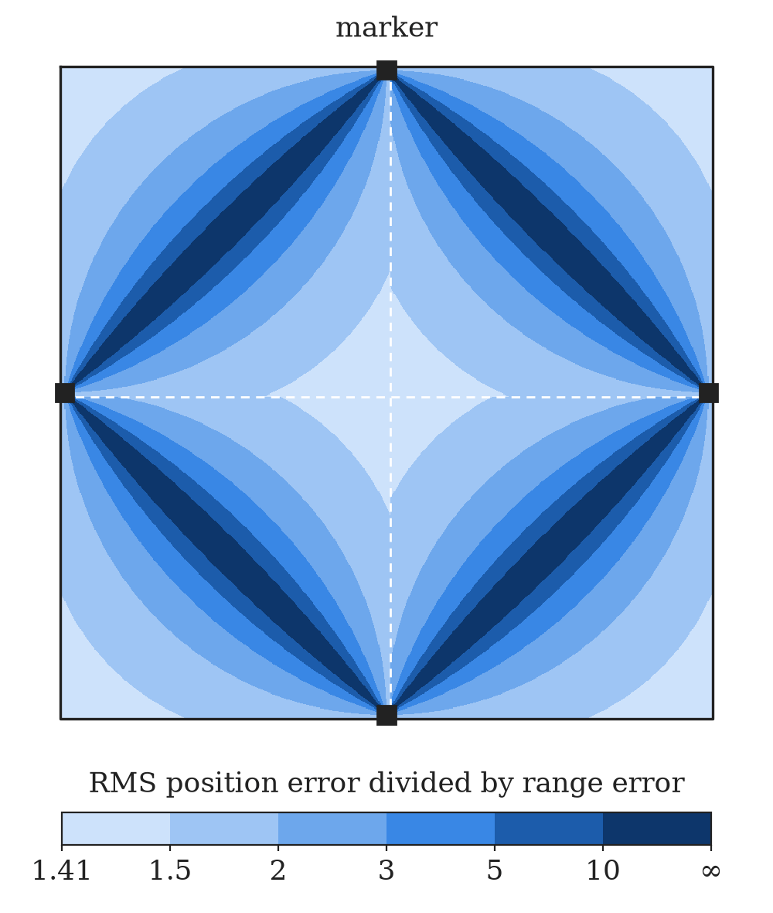

Localizing a Create 2 with two lasers
I have an iRobot Create 2, which the repo’s README calls Anton the Robot Vacuum, and an idea for how it could find itself in a room. Put a marker at the middle of each wall. If the robot knows its distance to two of them, one on a side wall and one on the top or bottom, it knows where it is up to a single ambiguity, and two lasers can measure those distances. I worked out the geometry in a small pygame simulation and, separately, wrote the Python that drives the Create 2 over its serial cable. It all lives in a private GitHub repo.
| Robot | iRobot Create 2 |
|---|---|
| Connection | USB serial cable at 115200 baud |
| Robot commands | iRobot Open Interface: Start (128), Safe mode (131), Drive Direct (145), Song (140) and Play Song (141) |
| Localization | Two laser ranges to markers at the wall midpoints, solved by intersecting two circles |
| Software | Python, pyserial, pygame, NumPy |
| Dates | From February 23, 2022, in the git history. The simulation is from March 20. |
The idea
The robot uses the two markers nearest to it, picked by a quadrant check: comparing \(x\) with the room’s centre line picks left or right, and comparing \(y\) picks top or bottom. Call them \(A\) and \(B\), with laser ranges \(r_A\) and \(r_B\). The robot lies on a circle of radius \(r_A\) around \(A\) and on one of radius \(r_B\) around \(B\), so it must be at one of the two points where those circles cross.
The math
Let \(D = |B - A|\) be the distance between the markers, \(\hat{\mathbf e} = (B - A)/D\) the unit vector from \(A\) to \(B\), and \(\hat{\mathbf n}\) that vector turned 90°. Writing the robot’s position as \(P = A + s\,\hat{\mathbf e} + t\,\hat{\mathbf n}\), the two ranges give
\[ s^2 + t^2 = r_A^2, \qquad (s - D)^2 + t^2 = r_B^2 . \]Subtracting one from the other cancels \(t^2\) and leaves a linear equation in \(s\):
\[ s = a = \frac{r_A^2 - r_B^2 + D^2}{2D}, \] \[ t = \pm h = \pm\sqrt{r_A^2 - a^2}, \] \[ P = A + a\,\hat{\mathbf e} \pm h\,\hat{\mathbf n} . \]That’s what FindCirInt in Pos.py computes, returning None when the circles miss or one sits inside the other.
Pos.py also reads the answer off as angles, which is where the room’s shape comes in. With the markers at the wall midpoints, \(AB\) is the diagonal of the quadrant, at 45° to both walls. The chord between the two crossings has length \(c = 2h\) and spans an angle \(2\varphi\) at \(A\), with
\[ \sin\varphi = \frac{c}{2 r_A} . \]So the two candidates sit at 45° ± \(\varphi\) from the wall through \(A\). In a frame at \(A\) with one axis along the wall and the other pointing into the room,
\[ P - A = r_A\,(\cos\theta,\ \sin\theta), \] \[ \theta = 45^\circ \pm \varphi . \]Those are FindWidthC1 and FindHeightC1, which give the simulation its orange lines. Inside a quadrant \(\varphi\) never passes 45°, so the arcsine is safe.
For example, in the simulation’s 800-pixel room, with the markers 5 pixels in from the walls and \(y\) pointing down, the robot is at \((640, 150)\), the top marker is \(A = (400, 5)\) and the right marker is \(B = (795, 400)\). Then
\[ r_A = 280.4, \quad r_B = 294.2, \] \[ D = 558.6, \quad a = 272.2, \] \[ h = 67.2, \quad \varphi = 13.9^\circ . \]The angles \(45^\circ \mp 13.9^\circ\) give the two candidates \((640, 150)\) and \((545, 245)\).
Two answers
The candidates are mirror images across \(AB\). Since \(AB\) is the quadrant’s diagonal, and reflecting a square across its diagonal maps it onto itself, both always land in the same quadrant, so the quadrant can’t tell them apart. The simulation draws both in yellow and doesn’t choose. It also cheats on the quadrant, taking it from the true position (the mouse), which a real robot would have to get some other way.
They’re \(2h\) apart, twice the robot’s distance from \(AB\): far apart deep in a corner or near the middle of the room, and merging as the robot crosses \(AB\), as in the video.
How sensitive it is
The simulation uses exact distances. To see how laser noise would carry into the position, linearize: a small move \(\delta P\) changes each range by the part of \(\delta P\) along that laser:
\[ \delta r_A = \hat{\mathbf u}_A \cdot \delta P, \qquad \delta r_B = \hat{\mathbf u}_B \cdot \delta P, \]where \(\hat{\mathbf u}_A\) and \(\hat{\mathbf u}_B\) are unit vectors from the markers to the robot. Stack them as the rows of a \(2 \times 2\) matrix \(J\), so \(\delta P = J^{-1}\,\delta\mathbf r\). If both ranges have independent errors with standard deviation \(\sigma\), the RMS position error is
\[ \sigma_P = \sigma\sqrt{\operatorname{tr}\!\big((J^{\mathsf T} J)^{-1}\big)} = \frac{\sqrt{2}\,\sigma}{|\sin\gamma|}, \]where \(\gamma\) is the angle between the two laser lines at the robot. The best case, lasers crossing at a right angle, is \(\sqrt 2\,\sigma\), and by Thales’ theorem that happens on the circle with \(AB\) as its diameter, through the centre of the room and the corner of the quadrant. The error grows as the robot approaches \(AB\). On \(AB\) itself the lasers point in opposite directions and the circles only touch.

FindCirInt match the formula to within 1%; right on a marker line, about half of them give circles that don’t meet at all.Driving the Create 2
The other half of the repo talks to the robot through iRobot’s Open Interface. My scripts open the serial port at 115200 baud, send Start (128) and Safe mode (131), then drive with Drive Direct (145), which takes right and left wheel speeds in mm/s as signed 16-bit big-endian numbers:
cmd = struct.pack(">Bhh", 145, V_r, V_l)
sendCommandRaw(cmd)The first test script, from February 2022, played a quarter-second note on connecting (opcodes 140 and 141) and opened a 400 × 400 pygame window standing in for a 1 m × 1 m floor, where the mouse painted grid cells into a path. The test drive ignored the path in favour of four fixed waypoints near the corners: a diagonal, one side and the other diagonal. RobotMove turned in place with the wheels at ±300 mm/s, then drove straight at 300 mm/s. Both moves were timed, the turn using half the Create 2’s wheel spacing, 117.5 mm, and nothing measured where the robot actually ended up.
Where it stands
The simulation and the drive code haven’t met: nothing in the repo reads real laser ranges or runs FindCirInt on the robot.
Update, May 2022
In May I cut the test script down to a keyboard drive: 1 forward, 2 back and 3 stop, at 500 mm/s, the fastest Drive Direct allows. The repo stops there, at May 9, 2022. The simulation and the drive code never met.
Update, April 2023
A Create 2 showed up again a year later, as the base of the six-camera panorama rig from my CMPUT 428 project with Justin Rozeboom.
Questions or comments? Email me at justin@justinvalentine.ca.
Comments